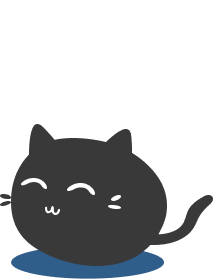

Statement
Made with love and lots of cat graphics
By Hargun, Cindy, Jington & Kelly
Our game is called Can't CATch Me!
Column A:
"website that is a game (a game that is also an artwork)"
Column B: Definitions of Play
Oxford Dictionaries: "Brisk, light, or changing movement or action."
Merriam-Webster: "Elusive change or movement, as of light or colors.", "Free or unimpeded motion (as of a part of a machine)."
Column C: Theories
The Romantic Theory of Play: an approach to play that emphasizes creativity, freedom, and self-expression rather than structure or rules (Sicart, M. 2014. Play Matters )
Column D:
Group of 4 (Java Script Option), 14 pages total & 5 pages with JS
Can't Catch Me is a playful and immersive web-based game where players take on the role of a mischievous cat sneaking through Grandma's two-story house in the dead of night. The game's core objective is to explore the house, collect treats, and cause chaos by knocking over items–all while avoiding Grandma's sharp gaze.
As the cat, players navigate various rooms filled with interactive objects like vases, cat treats and milk, which invite playful destruction. However, creating too much noise risks alerting Grandma, who periodically appears to investigate any disturbances.
The game features randomized events, such as power-ups, and dynamic interactions to keep the experience unpredictable and fresh. For instance, treats and toys may appear in different locations on each playthrough, encouraging exploration and replayability. Timed events and auditory cues, such as Grandma's approaching footsteps or the crash of a fallen object, add tension and excitement to the gameplay.
Ultimately, Can't Catch Me is a lighthearted game that captures the spirit of playful curiosity and chaotic fun. It invites players to embrace the role of a naughty but lovable pet, exploring a charming and interactive environment filled with surprises. The game's objective is not about winning but about enjoying the freedom to play, explore, and cause a little harmless trouble along the way.
4. List ALL the filenames of web pages that contribute to fulfilling the JavaScript requirements
6. Give credit for any outside sources you used (if any) to learn JavaScript
7.Give credit/list sources for any Creative Commons Licensed media you use on or in creating the A2 (if you use any).